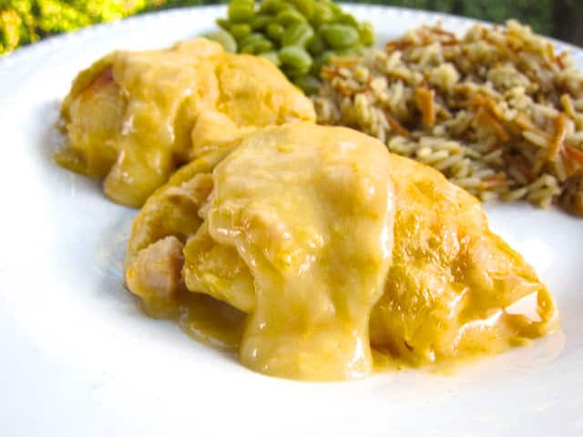

Chicken Rolls

Description
Another family recipe! I learned this one from my mom. This is one of my wife's favorite recipes! The recipe itself is very simple yet packed full of flavor.
Ingredients
- 1 rotisserie chicken (or 1 whole oven roasted chicken)
- 2 cans of crescent rolls
- 1 cup shredded sharp chedder
- 2 cloves garlic, minced
- 2 tsp onion powder
- 2 tsp salt
- 1 tsp black pepper
- 1 Tbsp italian seasoning
- 1 tsp smoked paprika
- 1 8 oz can cream of chicken soup
Steps
- Pick all meat off of the chicken and seperate skin (you can leave skin in but will result in a more chewier final result).
- Mix chicken meat, minced garlic, onion powder, salt, pepper, italian seasoning, and smoked paprika in a large bowl.
- Pack each crescent rolls with chicken mixture and shredded chedder, roll the crescent roll then top with additional chedder.
- Bake according to direction for crescent rolls.
- Meanwhile, make the gravy sauce by cooking cream of chicken coup according to direction, but only use half of the liquid. Mix in remaining chicken mixture leftover from the rolls and simmer for 6-8 minutes.
- Serve chicken rolls covered in chicken gravy sauce!